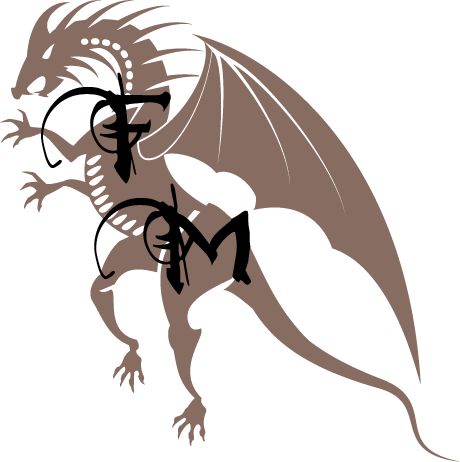
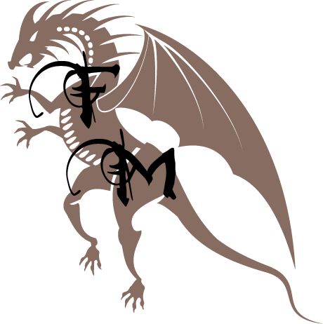

Fantasy Magasin- En verden af fantasy
Fantasy Magasin- En verden af fantasy
Udgivet d.13-10-2016
Den 47-årige skuespiller, dukkede allerede op i det første afsnit af Hit-serien, hvor han i en af hovedrollerne, gjorde sig bemærket som Jaime Lannister. Nikolaj har vist sig i hvert afsnit siden og hans karakter er nu efter 7 sæsoner, hvilket er en præstation i sig selv, stadig i live. Den 8 sæson bliver sendt i 2019, hvor man igen vil se ham på skærmen som Jaime Lannister.
Den flotte skuespiller Dar Salim, viste sig ligesom Nikolaj allerede i det første afsnit i sæson 1. Dar Salim spillede Qotho, en af Khal Drogos følgesvende. Hans karakter var med i 6 afsnit, før den gode Ser Jorah dræbte ham i kamp.
Seriens Hovedforfattere er efter sigende helt vilde med ´klovn ´-serien, som Frank Hvam og Casper Christensen jo har lavet. Hvem blev derfor spurgt om han ville deltage i serien, dette takkede han ja til. Han var dog kun med det sidste afsnit af sæson 6. Her spiller han bibliotekaren, der tager imod Tarly da han kommer til citadellet. Vi har ikke set ham i sæson 7, hvor vi har fulgt tarly rundt i citadellet, da det kun var en engangs forestilling.
Pilou AsbækPilou Asbæk dukkede for første gang op i serien, i sæson 6. Her dukkede han op som Euron Grayjoy, som alle efterhånden elsker at hade. Han har siden deltaget i 8 episoder. Her har han både dræbt elskede karakterer og lavet onde planer med den grufulde Cercei Lannister. Pilou Asbæk, vil ligesom din danske kammerat Nikolaj Coster-Waldau også dukke op på skærmen i sæson 8 af Game of Thrones.